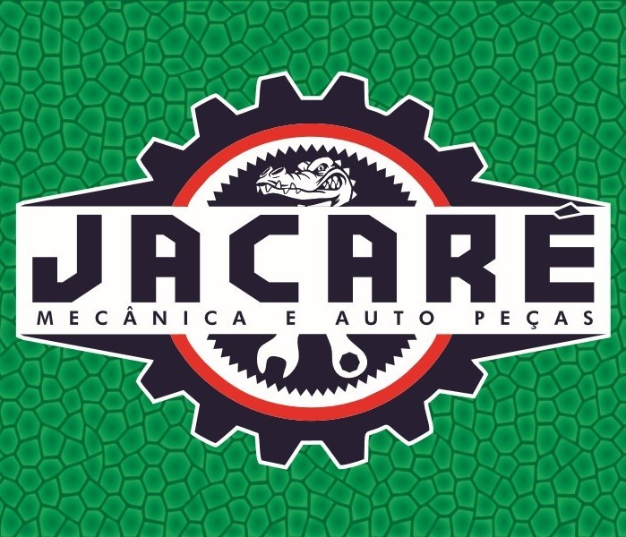

Jacaré Mecânica e Auto Peças
Especialistas em Diesel
Tradição e excelência em mecânica pesada desde 1997

Nossa História
Rogério, natural de São Manoel do Iguaiaçu — distrito de Dona Euzébia, MG — é mais conhecido por todos como Jacaré, apelido que o acompanha desde sempre. Sua trajetória no ramo automotivo começou em 1994, quando se mudou para Cataguases para cursar Matemática. Durante o dia, trabalhava como auxiliar de mecânico, e à noite se dedicava aos estudos. Foi nesse período que descobriu sua verdadeira vocação pela mecânica automotiva. Em 08 de setembro de 1997, Rogério deu um importante passo e abriu seu primeiro CNPJ: Mecânica Jacaré, localizada no bairro Taquara Preta.
O Início
Com o passar dos anos e observando as necessidades do mercado, Rogério percebeu que poderia oferecer ainda mais aos seus clientes. Assim nasceu a Jacaré Mecânica e Auto Peças, unindo manutenção e fornecimento de peças em um só lugar. Atualmente, a empresa continua no bairro Taquara Preta, agora em novo endereço: 📍 Rua Geraldo Costa Cruz, nº 84, bem próximo ao local original.
Expansão dos Serviços
Sempre buscando evolução, a Jacaré Mecânica e Auto Peças acompanha as inovações do setor automotivo, oferecendo diagnóstico preciso, equipamentos modernos e profissionais capacitados para atender com qualidade e confiança.
Modernização
Investimos em equipamentos de última geração e capacitação técnica, sempre mantendo o foco na especialização em motores diesel e veículos comerciais.
Tradição Consolidada
Com mais de 25 anos de experiência, a empresa se destaca em Cataguases e região pela seriedade, confiança e tradição no atendimento. A Jacaré Mecânica e Auto Peças é sinônimo de comprometimento, qualidade e respeito com o cliente.